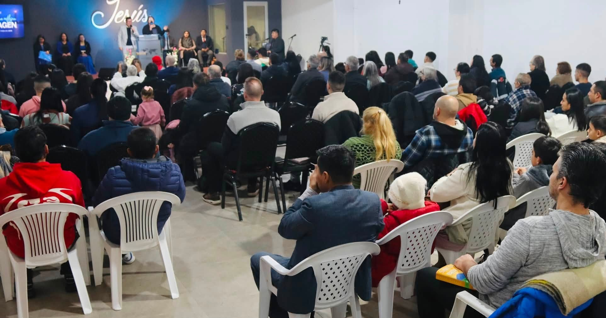
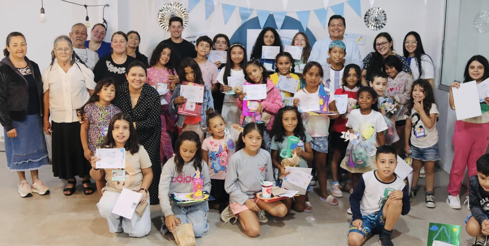
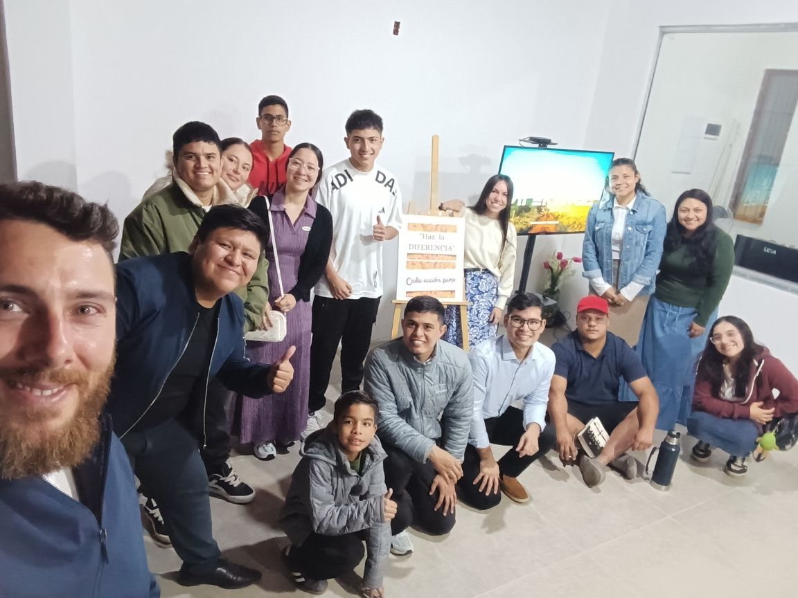
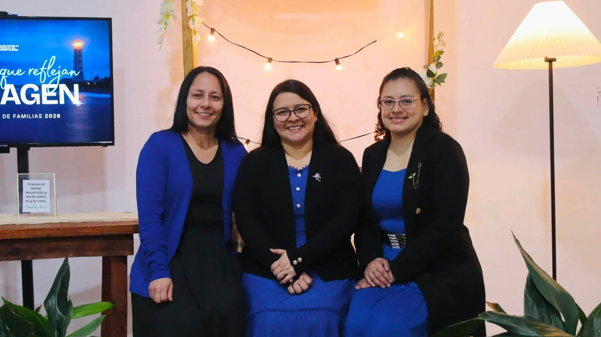
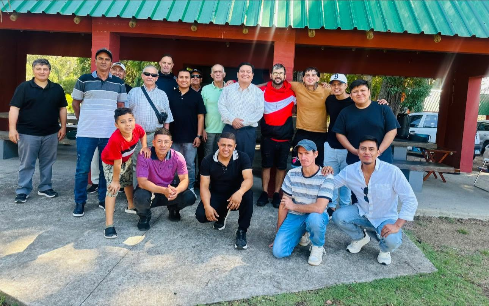
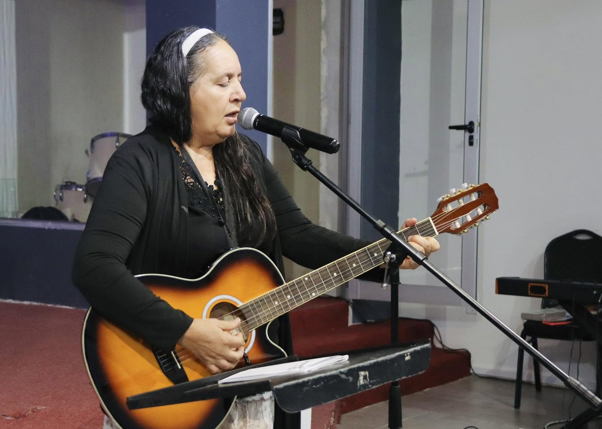
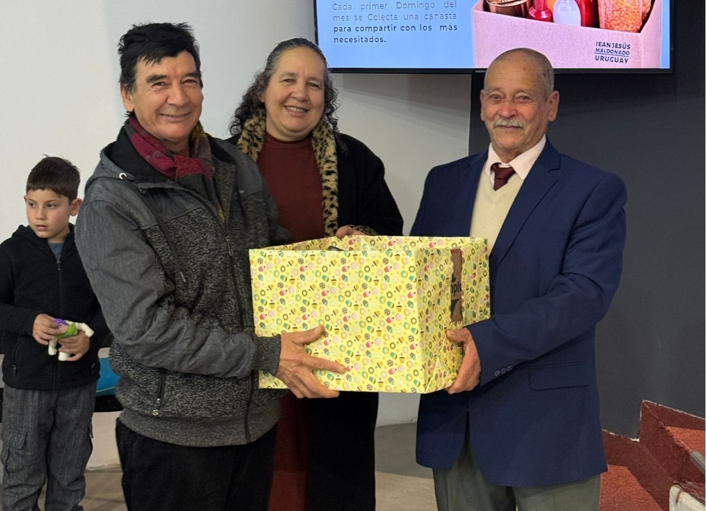
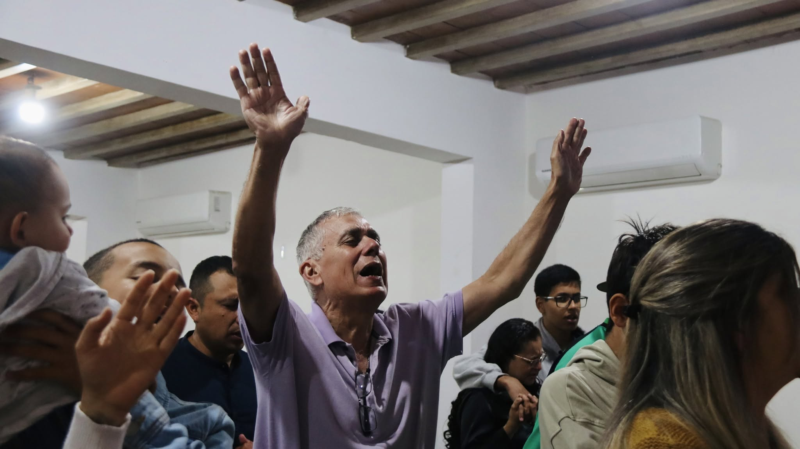
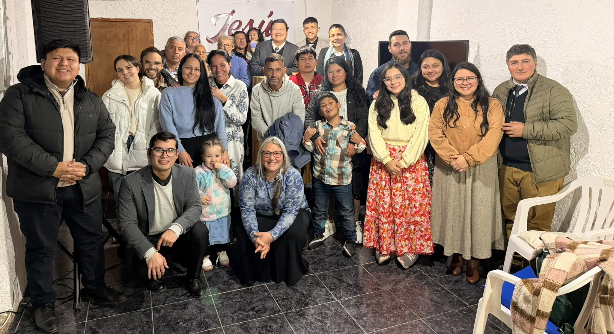
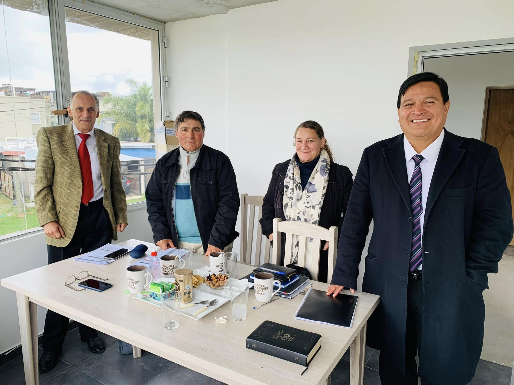

Av. Wilson Ferreira Aldunate & 25 de Agosto
«Un Señor, una fe, un bautismo»
Un lugar para encontrarte con Jesús.
Somos una iglesia para todos, donde cada persona puede conocer a Jesús, crecer en la fe y encontrar una familia.
Una iglesia para conocer a Jesús, crecer en la fe y vivir en comunidad.
IEANJESÚS Maldonado es una Iglesia Evangélica Apostólica del Nombre de Jesús ubicada en Maldonado, Uruguay, comprometida con la enseñanza de la Palabra de Dios, la formación de discípulos y el servicio a las familias y la comunidad.
Horarios de Cultos & Células
Cronograma semanal completo en el templo sede y en los hogares de Maldonado y Rocha.
Célula Barrio Hipódromo
Reunión en hogar para compartir la Palabra y oración.
Células en Hogares
19:00 hs: La Milagrosa
19:30 hs: Cerro Pelado
Células en Hogares
19:30 hs: Cuñetti
19:30 hs: Rocha
Reunión General
Culto congregacional en sede central: alabanza y Palabra.
Células en Hogares
19:00 hs: Centro
19:00 hs: Maldonado Nuevo
19:30 hs: Barrio Norte
Evangelismo en la Feria
Evangelismo en la Feria
Gran Celebración
Gran celebración dominical de adoración, comunión y predicación.
Reunión General de Jueves
Culto congregacional en sede central: alabanza y Palabra.
Evangelismo en la Feria
Evangelismo en la Feria
Gran Celebración Dominical
Gran celebración dominical de adoración, comunión y predicación.
Célula Barrio Hipódromo
Reunión en hogar para compartir la Palabra y oración.
Células en Hogares
19:00 hs: La Milagrosa
19:30 hs: Cerro Pelado
Células en Hogares
19:30 hs: Cuñetti
19:30 hs: Rocha
Células en Hogares
19:00 hs: Centro
19:00 hs: Maldonado Nuevo
19:30 hs: Barrio Norte
SALVACIÓN,
SANIDAD Y
RESTAURACIÓN
Conoce nuestra fe, nuestra doctrina y el mensaje que anunciamos cada semana a la comunidad de Maldonado y el mundo.
EN QUÉ CREEMOS
Nuestro Pastor
PASTOR FRANKLIN SALASEl Pastor Franklin Salas es misionero, predicador y consejero bíblico. Su ministerio se caracteriza por la enseñanza de la Palabra de Dios, la formación de discípulos y el propósito de llevar a las personas a una relación más profunda con Jesucristo.
Células en los Barrios
Encuentros semanales en hogares distribuidos por Maldonado y extensión en Rocha.

Barrio Hipódromo

La Milagrosa

Cerro Pelado

Centro

Cuñetti

Rocha

Maldonado Nuevo

Barrio Norte
Ubicación y Canales Oficiales
Comités
Estructura de servicio dinámico para cada etapa y vocación de la comunidad.

Educación Cristiana
Escuela bíblica interactiva, creativa y con sólidos valores para niños y familias.

Comité de Jóvenes
Reuniones dinámicas, música, campamentos y liderazgo para las nuevas generaciones.

Damas Dorcas
Comunidad de mujeres dedicadas a la oración, el servicio mutuo y la edificación del hogar.

Caballeros
Varones guiados por la Palabra, fortaleciendo el liderazgo familiar y la mayordomía.

Música & Alabanza
Instrumentistas y voces dirigiendo los momentos de alabanza y comunión espiritual.
Comunicaciones
Transmisiones en vivo, fotografía, sonido y producción audiovisual de cada actividad.

Obra Social
Apoyo alimentario, canastas, ropa y asistencia a familias necesitadas de Maldonado.

Intercesión
Clamor constante por sanidad, restauración de hogares y peticiones de la congregación.

Misiones y Extensión
Evangelismo en calles, apertura de puntos misioneros en Rocha y alcance regional.

Junta Local
Coordinación administrativa, mayordomía responsable y soporte a la visión pastoral.
Emprendimientos de Nuestra Comunidad
Conoce algunos de los emprendimientos que forman parte de nuestra comunidad y que apoyan este espacio.
Este espacio reconoce a emprendimientos de nuestra comunidad que colaboran con el mantenimiento de este proyecto digital.
¿TE ALEJASTE DE DIOS?
Si alguna vez conociste a Dios y te alejaste, hoy aún puedes volver. Él no se ha olvidado de ti y tiene sus brazos abiertos para restaurarte.
QUIERO ACERCARME A DIOS